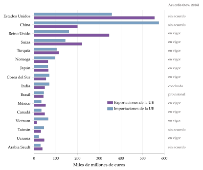
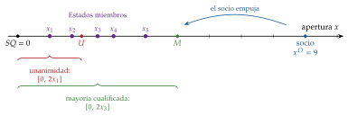
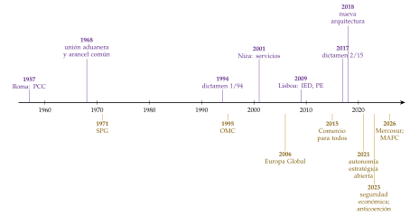
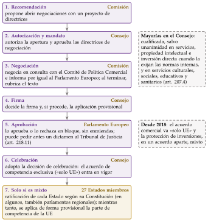
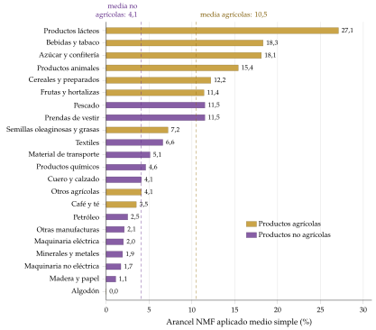
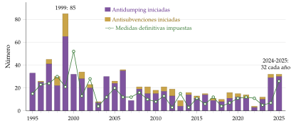
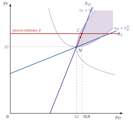
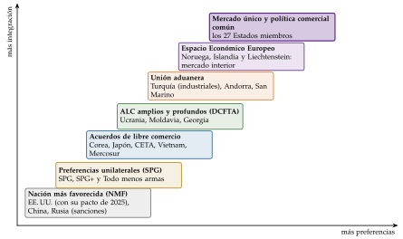
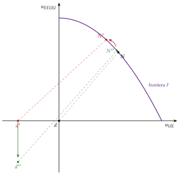

Tema 3.B.41
La política comercial de la Unión Europea.
Política comercial de la UE: art. 207 TFUE, dictamen 2/15, antidumping, SPG, anticoerción, MAFC, acuerdos (CETA, Mercosur, India) y aranceles de EE. UU.
Exclusivo Material exclusivo de victorgutierrezmarcos.es y la app Oposición TCEE · DCE. Puedes usarlo libremente para tu estudio personal. No se autoriza su incorporación a otras plataformas, aplicaciones o servicios. Condiciones de uso.
Introducción
Enganche:
«Donde las dan, las toman», dice el refrán. El 2 de abril de 2025, Estados Unidos anunció un arancel «recíproco» del 20 % para todo lo que le vendiera la Unión Europea. La Unión aprobó en julio contramedidas sobre 93.000 millones de euros de importaciones estadounidenses, pero no las aplicó: el 27 de julio pactó un techo del 15 % para casi todas sus exportaciones a cambio de suprimir sus propios aranceles a los productos industriales de Estados Unidos.
Mientras tanto, en 2026 empezó a aplicar el acuerdo con el Mercosur, cerró las negociaciones con la India y con Australia y firmó el nuevo acuerdo con México.
La pregunta que recorre la exposición es: ¿cómo defiende sus intereses una potencia comercial que vive de la apertura, cuando sus socios vuelven a las represalias?
Relevancia:
Es una potencia comercial: sumando bienes y servicios, la UE es el mayor exportador del mundo, y es el segundo importador de bienes, y su red de acuerdos preferenciales es la mayor del mundo (44 acuerdos con 76 socios a finales de 2025, que cubren el 46,3 % de su comercio exterior).
Es la política más supranacional de la Unión: es competencia exclusiva desde los Tratados de Roma, la Comisión negocia en nombre de los 27 y la UE habla con una sola voz en la Organización Mundial del Comercio (OMC).
Para España: desde 1986 su política comercial es la de la Unión [ver tema 4.A.27]; el 61,8 % de sus exportaciones de bienes va a otros Estados miembros, pero el 38,2 % restante, unos 151.000 millones de euros en 2025, y el 43,9 % de sus importaciones dependen de la política comercial común [ver tema 4.A.22] [ver tema 4.A.24].
Contextualización:
Qué es: la política comercial común (PCC) es el conjunto de normas y decisiones con que la Unión regula los intercambios de bienes, servicios, propiedad intelectual e inversión directa con los países de fuera de la Unión (arts. 206 y 207 del Tratado de Funcionamiento de la Unión Europea, TFUE). Es la cara exterior de la unión aduanera: dentro, libre circulación [ver tema 3.B.39]; frente a terceros, un arancel común y una sola política.
Sus 2 vertientes:
la política comercial autónoma, que la Unión decide por sí sola: el arancel aduanero común, la defensa comercial, las preferencias unilaterales y los nuevos instrumentos de seguridad económica;
la política comercial convencional, que pacta con otros: los acuerdos de la OMC y los acuerdos preferenciales.
Qué no trata esta exposición: la base institucional de la Unión [ver tema 3.B.36], las reglas de la OMC [ver tema 3.B.33] [ver tema 3.B.34] y el marco político de las relaciones exteriores y de la cooperación al desarrollo [ver tema 3.B.42]. Aquí, el instrumento comercial.
Problemática:
¿Por qué tiene la Unión una política comercial común y por qué la decide en exclusiva?
¿Con qué reglas se negocia, se aprueba y se ratifica un acuerdo comercial?
¿Qué instrumentos tiene para proteger a sus productores y para defenderse de la coerción?
¿Con quién comercia en condiciones preferentes y qué relación tiene con Estados Unidos y con China?
Estructura:
La exposición va de los fundamentos a los instrumentos, y de lo que la Unión decide sola a lo que pacta:
I. Las bases de la política comercial común (I): su peso, su justificación económica, con el modelo de la economía política de la «sola voz», su marco jurídico y la evolución de su estrategia.
II. La política comercial autónoma (II): el arancel, la defensa comercial, con el modelo del antidumping, las preferencias generalizadas y los nuevos instrumentos.
III. La política comercial convencional (III): la OMC, la red de acuerdos preferenciales y las relaciones con Estados Unidos, con el modelo de la negociación bajo amenaza, y con China.
3.B.41. La política comercial de la Unión Europea
Introducción2′30″
I. Las bases de la política comercial común8′
1. Relevancia
2. Aproximación de teoría económica
3. Marco jurídico
4. Delimitación
5. La estrategia comercial: de Roma a la seguridad económica
II. La política comercial autónoma10′
1. La política arancelaria
2. Las medidas de defensa comercial
3. El Sistema de Preferencias Generalizadas
4. Los instrumentos de seguridad económica y sostenibilidad
III. La política comercial convencional8′30″
1. Los acuerdos multilaterales y plurilaterales de la OMC
2. Los acuerdos comerciales preferenciales
3. Acuerdos en negociación y pendientes de ratificación
4. Otras relaciones comerciales: Estados Unidos, China y Rusia
Conclusión1′
Reparto del cante: introducción, 2′30″; I, 8′ (I.1, 0′30″; I.2, 3′, de ellos 2′ para el modelo de la sola voz; I.3-I.4, 3′; I.5, 1′30″); II, 10′ (II.1, 1′30″; II.2, 4′, de ellos 2′ para el modelo del antidumping; II.3, 1′30″; II.4, 3′); III, 8′30″ (III.1, 1′; III.2, 3′; III.3, 1′; III.4, 3′30″, de ellos 2′ para el modelo de la negociación con Estados Unidos), y conclusión, 1′. Los 3 modelos se cantan con su gráfico: el de la sola voz, el del compromiso de precios y el de la negociación. Las figuras imprescindibles son la del procedimiento de los acuerdos y la escalera de preferencias. La lista de acuerdos se canta por generaciones y con 3 o 4 ejemplos, no país a país: el detalle de cada acuerdo, en cajas grises y en el anexo, es para las preguntas del tribunal.
Notación. En el modelo de la sola voz, \(x\) es el grado de apertura del mercado de la UE, \(\mathit{SQ}\) el statu quo, \(x_i\) el punto ideal del Estado \(i\), \(x^{O}\) el del socio negociador, \(x_p\) el del Estado pivote y \(x^*\) el resultado. En el del antidumping, \(p_D\) y \(p_F\) son los precios de la empresa de la UE (doméstica) y de la extranjera, \(c\) el coste marginal, \(b\) el grado de sustituibilidad, \(\bar p\) el precio mínimo y \(\pi_i\) los beneficios. En el de la negociación, \(u_i\) es la ganancia de bienestar de cada parte, \(d_i\) su punto de desacuerdo (lo que obtiene sin acuerdo) y \(F\) la frontera de los acuerdos posibles. AAC: arancel aduanero común; ALC: acuerdo de libre comercio; NMF: nación más favorecida.
I. Las bases de la política comercial común
Empezamos por los fundamentos: cuánto pesa la Unión en el comercio mundial, por qué tiene sentido una política comercial única y con qué reglas se hace.
Conclusión anticipada: la PCC es la consecuencia lógica de la unión aduanera y el instrumento que convierte a 27 economías medianas en una potencia negociadora; su eficacia depende de cómo se reparte el poder entre la Comisión, el Consejo, el Parlamento y los Estados.
I.1. Relevancia
El comercio forma parte del ADN de la Unión: la integración europea empezó con el comercio (la unión aduanera de 1968) y sigue siendo una de las economías más abiertas entre las grandes: en 2025 exportó 2,65 billones de euros en bienes y 1,58 en servicios fuera de la Unión, y compró 2,54 y 1,43 billones.
Sus socios (gráfico 1):
Estados Unidos es el primer socio: le vende el 21 % de sus exportaciones de bienes, con un superávit de casi 200.000 millones de euros, que se compensa en buena parte con el déficit en servicios (178.000 millones);
China es el segundo socio y el primer proveedor: la UE le compra 574.000 millones y le vende 199.000, con un déficit de 375.000 millones, el mayor con cualquier país;
siguen el Reino Unido, Suiza y Turquía, los 3 con acuerdos preferenciales muy profundos.
Sus intereses: es ofensiva en manufacturas, servicios, contratación pública, indicaciones geográficas y reglas, y defensiva en la agricultura y en los sectores con exceso de capacidad mundial (acero, química).

Fuente: Eurostat, Extra-EU trade by partner (ext_lt_maineu), datos de 2025; situación de los acuerdos en noviembre de 2026, Comisión Europea.
El comercio de servicios por socios, 2025 (miles de millones de euros, exportaciones/importaciones de la UE): Estados Unidos, 343/522; Reino Unido, 309/249; Suiza, 172/102; China, 67/46; Japón, 45/24; la India, 29/38; Canadá, 29/20; Brasil, 24/10. La UE tiene superávit en servicios con casi todos, salvo con Estados Unidos (servicios digitales, propiedad intelectual y financieros) y con la India (informática). Sumando bienes y servicios, el superávit con Estados Unidos es de unos 18.000 millones de euros, mucho menor que el que se ve solo en bienes: es uno de los argumentos que la UE usó en la negociación de 2025.
I.2. Aproximación de teoría económica
I.2.1. ¿Por qué una política comercial?
El punto de partida es el librecambio: los modelos de comercio dicen que abrirse da ganancias, por la ventaja comparativa (Ricardo, Heckscher-Ohlin), por las economías de escala y la variedad (nueva teoría del comercio) y por la selección de las empresas más productivas (Melitz, 2003) [ver tema 3.B.5] [ver tema 3.B.6]; y, a largo plazo, por la difusión de ideas [ver tema 3.B.9].
Pero hay excepciones, que dan razón de ser a una política comercial activa [ver tema 3.B.7] [ver tema 3.B.8]:
el arancel óptimo: un país grande, como la UE, puede mejorar su relación real de intercambio (RRI) con un arancel, si los demás no responden;
la industria naciente y la política comercial estratégica, que trasladan rentas a las empresas propias en mercados de oligopolio;
la protección frente a la competencia desleal (dumping y subvenciones) y frente a las oleadas de importaciones;
y, cada vez más, la seguridad: depender de un solo proveedor de bienes críticos es un riesgo que el mercado no valora.
La integración regional es un segundo óptimo: si el librecambio mundial no es posible, una unión aduanera puede crear comercio (sustituye producción interna cara por la de un socio eficiente) o desviarlo (sustituye a un proveedor de fuera eficiente por un socio menos eficiente), según el análisis de Viner (1950) [ver tema 3.B.10]. Cuantos más socios y más bajo el arancel exterior común, más creación y menos desviación: una buena razón para que la UE combine su unión aduanera con un arancel exterior bajo y una red de acuerdos.
I.2.2. ¿Por qué una competencia exclusiva?
Es una consecuencia de la unión aduanera: con un arancel común, una política comercial nacional es imposible; cada mercancía que entra por un puerto circula libremente por toda la Unión. Si cada Estado pactara sus propias rebajas, el comercio entraría por el más abierto (desviación del tráfico, trade deflection) y haría falta volver a las aduanas interiores.
Reduce los costes de transacción: un solo arancel, unas solas reglas de origen y una sola negociación en lugar de 27.
Aumenta el poder de negociación: un mercado de 450 millones de consumidores pesa más que cualquiera de sus Estados por separado, en la OMC y en los acuerdos bilaterales. Es la intuición de que juntos se negocia mejor, que el modelo siguiente matiza.
Encaja con la teoría del federalismo: la política comercial tiene grandes externalidades entre Estados y preferencias relativamente parecidas, que es cuando conviene centralizar una competencia [ver tema 3.B.36] [ver tema 4.B.14].
I.2.3. La economía política de la «sola voz» (Meunier, 2005)
a) Idea
Que la UE hable con una sola voz no garantiza, por sí solo, que negocie mejor. Meunier (2005) muestra que el resultado depende de 2 variables institucionales y de una de contexto:
la regla de voto en el Consejo: unanimidad o mayoría cualificada;
la delegación en la Comisión: un mandato restrictivo y vigilado o uno amplio;
y el contexto: si el socio quiere cambiar la política de la UE (caso conservador o defensivo, como la agricultura) o es la UE la que quiere cambiar la del socio (caso reformista u ofensivo, como la contratación pública).
Es la aplicación a la Unión de la idea de Thomas Schelling1 (1960): en una negociación, tener las manos atadas puede ser una ventaja, y de los juegos a 2 niveles de Putnam (1988): lo que se pacta fuera tiene que poder ratificarse dentro.
b) Modelo
i) Supuestos
Un solo eje de política: el grado de apertura \(x\) del mercado de la UE (o de su socio, en el caso reformista), con el statu quo en \(\mathit{SQ}=0\).
\(n\) Estados miembros con puntos ideales \(x_1<x_2<\dots<x_n\) y preferencias simétricas (por ejemplo, cuadráticas) en torno a ellos: el Estado \(i\) acepta cualquier acuerdo que le deje al menos tan bien como el statu quo, es decir, cualquier \(x\in[0,\,2x_i]\).
Un socio negociador \(O\) que quiere la mayor apertura posible (\(x^{O}\) muy por encima de los \(x_i\)) y que puede hacer una oferta del tipo «lo tomas o lo dejas».
El acuerdo necesita la aprobación del Consejo: por unanimidad o por mayoría cualificada. El Estado pivote es el último cuyo voto hace falta para aprobarlo.
ii) Desarrollo
Paso 1: el conjunto ganador.
El conjunto ganador (win-set) de la UE son los acuerdos que el Consejo aprobaría frente al statu quo. Lo fija el pivote: el Estado \(p\) acepta hasta \(2x_p\), y todos los Estados más abiertos que él, también.
Paso 2: el resultado.
El socio empuja hasta el borde del conjunto ganador, o hasta su punto ideal si está dentro:
\[x^*=\min\big\{x^{O},\;2x_p\big\},\qquad p=\begin{cases}1 & \text{unanimidad}\\ q & \text{mayoría cualificada}\end{cases}\tag{1}\]
Paso 3: comparar las reglas (gráfico 2).
Con unanimidad decide el Estado más conservador, \(x_1\), y el resultado es \(U=2x_1\).
Con mayoría cualificada decide un Estado intermedio \(x_q>x_1\), y el resultado es \(M=2x_q>U\): más apertura y un acuerdo mejor para el socio.
Paso 4: la delegación.
Un mandato restrictivo y vigilado (el Comité de Política Comercial, que revisa cada paso) hace creíble que la Comisión no puede ir más allá de \(2x_p\): son las manos atadas.
Un mandato amplio da a la Comisión margen para cerrar acuerdos, pero el socio sabe que puede sacarle más.

Fuente: elaboración propia a partir de Meunier (2005, cap. 2). Puntos ideales ilustrativos de 5 Estados; con unanimidad decide \(x_1\) y con mayoría cualificada (3 de 5), \(x_3\).
iii) Implicaciones
En el caso conservador, la unanimidad y la delegación restrictiva hacen de la UE un negociador duro: el socio no obtiene más de lo que concede el Estado más reacio, y la Unión lo hace valer con el peso de todo su mercado. Los Estados más proteccionistas son los que más ganan con la sola voz.
En el caso reformista, las reglas internas importan menos: el resultado depende de lo que acepte el socio; pero con mayoría cualificada la UE consigue lanzar la ofensiva y cerrar el acuerdo, y ningún Estado aislado tendría peso para hacerlo.
Sin competencia exclusiva, el socio divide: puede pactar con los Estados más abiertos uno a uno, como hizo Estados Unidos con los acuerdos bilaterales de «cielos abiertos» en la aviación en los años 90.
Es un dilema de diseño: más mayoría y más delegación dan eficacia y acuerdos; más unanimidad y más control dan dureza y legitimidad.
c) Extensiones
La politización: desde el TTIP y el CETA, los parlamentos nacionales y regionales y la opinión pública son un nivel más de ratificación; con Putnam, un conjunto ganador interno más pequeño da más fuerza ante el socio, pero también más riesgo de que no haya acuerdo.
El Parlamento Europeo como veto: desde Lisboa tiene que aprobar todos los acuerdos, y lo ha usado (rechazó el acuerdo antifalsificación ACTA en 2012 y en 2026 retrasó el Mercosur pidiendo un dictamen al Tribunal de Justicia).
d) Evidencia empírica
Meunier (2005) contrasta el modelo con 4 negociaciones con Estados Unidos: en la agricultura de la Ronda Kennedy (unanimidad, caso conservador) Estados Unidos acabó aceptando la posición de mínimos de la Comunidad; en la Ronda Uruguay, el preacuerdo de Blair House (1992) se renegoció cuando Francia reafirmó su veto; en la contratación pública (1990-1994, caso reformista con mayoría) la Comunidad abrió en parte el mercado estadounidense, y en los cielos abiertos, sin competencia común, Estados Unidos dividió a los europeos.
Lo mismo se ve hoy: el acuerdo con el Mercosur salió adelante en el Consejo por mayoría cualificada, con Francia en contra, porque se dividió en un acuerdo comercial de competencia exclusiva y un acuerdo de asociación mixto.
e) Valoración
Explica bien por qué la UE es dura en lo defensivo y lenta en lo ofensivo, y por qué la regla de voto y la división de los acuerdos importan tanto.
Pero reduce la negociación a un eje y supone que el socio no tiene sus propias restricciones internas; deja fuera el poder de cada parte para amenazar si no hay acuerdo, que es lo que decidió la negociación con Estados Unidos en 2025 (III.4).
I.3. Marco jurídico
I.3.1. Delimitación de competencias y evolución
Competencia exclusiva: la política comercial común es una de las 5 competencias exclusivas de la Unión (art. 3.1.e TFUE): solo la Unión puede legislar y celebrar acuerdos; los Estados, solo si la Unión los habilita (art. 2.1) [ver tema 3.B.36].
Su ámbito ha crecido con cada Tratado (figura 1):
Roma (1957): una política comercial común basada en «principios uniformes», sobre todo de las mercancías. El Tribunal de Justicia confirmó en 1975 (dictamen 1/75) que la competencia era exclusiva.
Dictamen 1/94: el Tribunal resolvió que la Comunidad tenía competencia exclusiva para los acuerdos de mercancías de la Ronda Uruguay, pero compartida para la mayor parte de los servicios y de la propiedad intelectual: los acuerdos de la OMC fueron mixtos.
Ámsterdam (1997) y Niza (2001): extendieron la PCC a los servicios y a los aspectos comerciales de la propiedad intelectual, con excepciones y unanimidad.
Lisboa (2009): la PCC cubre todo el comercio de servicios, los aspectos comerciales de la propiedad intelectual y la inversión extranjera directa (IED); las medidas autónomas se adoptan por el procedimiento legislativo ordinario y el Parlamento Europeo tiene que aprobar todos los acuerdos.
Objetivos (art. 206 TFUE): contribuir al desarrollo armonioso del comercio mundial, a la supresión progresiva de las restricciones a los intercambios y a la IED y a la reducción de las barreras arancelarias y de otro tipo. Se ejerce en el marco de los principios y objetivos de la acción exterior (art. 21 TUE): derechos humanos, desarrollo sostenible, multilateralismo.

Fuente: elaboración propia a partir de los Tratados y de la Comisión Europea.
I.3.2. El dictamen 2/15 y la nueva arquitectura de los acuerdos
La pregunta: tras Lisboa, ¿podía la Unión celebrar sola un acuerdo «de nueva generación» como el de Singapur, que trata aranceles, servicios, contratación pública, propiedad intelectual, inversión y desarrollo sostenible?
El dictamen 2/15 (Tribunal de Justicia, 16 de mayo de 2017):
casi todo el acuerdo es competencia exclusiva de la Unión: el comercio de mercancías y servicios (incluido el transporte), la contratación pública, la propiedad intelectual, la competencia, la IED y también el capítulo de desarrollo sostenible, porque está ligado al comercio;
pero 2 materias son compartidas con los Estados: la inversión de cartera (no directa) y la solución de diferencias entre inversores y Estados, porque saca los litigios de los tribunales nacionales.
La respuesta, la nueva arquitectura (Conclusiones del Consejo del 22 de mayo de 2018):
como regla, el acuerdo de libre comercio va solo UE (EU-only): lo celebran el Consejo, por mayoría cualificada, y el Parlamento Europeo, sin ratificaciones nacionales;
la protección de inversiones va en un acuerdo aparte, mixto, que ratifican los 27;
se ha aplicado a Japón, Singapur, Vietnam, Nueva Zelanda, Chile, México y el Mercosur, en estos 3 últimos con un acuerdo comercial interino que se aplica mientras se ratifica el acuerdo de asociación completo.
Por qué importa: un acuerdo mixto puede quedar años a medias. El CETA con Canadá se aplica de forma provisional desde 2017 y en septiembre de 2026 todavía no lo habían ratificado 10 de los 27 Estados (en 2024 lo rechazó el Senado francés), por lo que su capítulo de inversiones no se aplica.
I.3.3. El procedimiento: cómo se negocia y se celebra un acuerdo
Las medidas autónomas (el arancel, la defensa comercial, el SPG) se adoptan por reglamentos del Parlamento Europeo y del Consejo, por el procedimiento legislativo ordinario (art. 207.2), y la Comisión las ejecuta con actos de ejecución, bajo el control de comités de los Estados (procedimiento de examen).
Los acuerdos siguen los arts. 207.3 y 218 TFUE (figura 2):
la Comisión recomienda abrir negociaciones; el Consejo la autoriza y le da directrices;
la Comisión negocia en consulta con el Comité de Política Comercial (el comité especial del art. 207.3, de representantes de los Estados) e informa por igual al Parlamento;
el Consejo decide la firma; el Parlamento Europeo da su aprobación, sin poder enmendar; el Consejo celebra el acuerdo;
si el acuerdo es mixto, además, lo ratifican los 27 según sus normas constitucionales.
Mayorías en el Consejo (art. 207.4): cualificada, salvo unanimidad para los servicios, la propiedad intelectual y la IED cuando el acuerdo incluya disposiciones que exijan unanimidad para las normas internas, y para los servicios culturales y audiovisuales (si afectan a la diversidad cultural) y los sociales, educativos y sanitarios (si pueden perturbar su organización nacional).

Fuente: elaboración propia a partir de los arts. 207 y 218 del TFUE y de las Conclusiones del Consejo de 2018.
I.3.4. Las reglas de la OMC como marco
La UE es miembro de la OMC desde su creación (1995), junto con sus 27 Estados; la Comisión habla en nombre de todos [ver tema 3.B.33]. Su política comercial tiene que respetar 2 excepciones a la cláusula de nación más favorecida (NMF):
art. XXIV del GATT: las uniones aduaneras y zonas de libre comercio se permiten si liberalizan «lo esencial de los intercambios» (en la práctica, en torno al 90 %) y no elevan la protección frente a terceros. Si una ampliación sube un arancel consolidado, la UE tiene que compensar: cuando Croacia adoptó el arancel común en 2013, China pidió y obtuvo un contingente de ajos;
la cláusula de habilitación (1979): permite preferencias no recíprocas a los países en desarrollo, la base del SPG (II.3).
I.4. Delimitación
Política autónoma frente a convencional: la primera es lo que la Unión decide sola (bloque II); la segunda, lo que pacta con otros (bloque III).
Lo que no es PCC:
la promoción comercial y el apoyo financiero a la exportación siguen siendo nacionales (el ICEX, la CESCE o el FIEM en España) [ver tema 4.A.24] [ver tema 4.A.25], aunque la UE vela por que no falseen la competencia y aplica el Consenso de la OCDE sobre créditos a la exportación con apoyo oficial [ver tema 3.B.8];
la agricultura tiene su propia política, aunque sus aranceles y contingentes forman parte del AAC [ver tema 3.B.38];
las sanciones (medidas restrictivas) son de la política exterior y de seguridad común y se deciden por unanimidad (art. 215 TFUE), aunque usan instrumentos comerciales.
I.5. La estrategia comercial: de Roma a la seguridad económica
Multilateralismo primero (1957-2006): la Comunidad negoció en las rondas del GATT y defendió la OMC, ofensiva en manufacturas y en los «temas de Singapur» y defensiva en la agricultura. Hasta los 2000 solo tenía acuerdos preferenciales con sus vecinos y con las antiguas colonias.
Europa Global (Global Europe, 2006): ante el bloqueo de Doha, la UE se lanza a los acuerdos bilaterales con economías grandes y dinámicas (Corea del Sur, la India, la ASEAN), con criterios de tamaño del mercado y de barreras.
Comercio para todos (Trade for All, 2015): tras las protestas contra el TTIP, la política comercial tiene que ser eficaz, transparente y basada en valores (desarrollo sostenible, derechos humanos); los textos negociadores se publican.
Revisión de 2021: abierta, sostenible y firme: introduce la autonomía estratégica abierta: seguir abierta, pero con capacidad de decidir por sí misma y de defenderse. Sus prioridades: reformar la OMC, apoyar la transición verde y digital, diversificar las cadenas de suministro y ser más firme ante las prácticas desleales.
La seguridad económica (2023-2026):
la Estrategia Europea de Seguridad Económica (junio de 2023) la ordena en 3 ejes: promover la competitividad propia, proteger frente a los riesgos (cadenas de suministro, tecnología, coerción, seguridad física) y asociarse con socios afines;
la Comunicación de diciembre de 2025 la convierte en doctrina: usar todos los instrumentos, sea cual sea su fin original, y coordinar a los Estados;
en octubre de 2026, el Consejo Europeo pidió a la Comisión «reforzar urgentemente» la caja de herramientas frente a los desequilibrios mundiales y al exceso de capacidad.
Recapitulación del bloque I: la PCC nace de la unión aduanera, se justifica por el poder de negociación y su alcance lo ha fijado el Tribunal de Justicia. ¿Con qué instrumentos actúa la Unión cuando decide sola?
II. La política comercial autónoma
Una vez vistos los fundamentos, pasamos a lo que la Unión decide sola: el arancel, la defensa comercial, las preferencias unilaterales y la nueva caja de herramientas de la seguridad económica.
Conclusión anticipada: el arancel ya protege poco, salvo en la agricultura; la protección se ha desplazado a la defensa comercial y, desde 2020, a instrumentos nuevos que ya no miran solo al precio, sino a la coerción, a la seguridad y a la sostenibilidad.
II.1. La política arancelaria
II.1.1. El arancel aduanero común
Origen: la unión aduanera se completó el 1 de julio de 1968, 18 meses antes de lo previsto, con un arancel aduanero común (AAC) que se fijó como la media aritmética de los aranceles de las 4 zonas aduaneras de los Seis (Francia, Alemania, Italia y el Benelux). Los Estados que se adhieren lo adoptan tras un periodo transitorio [ver tema 3.B.39].2
Cómo es:
se aplica según la Nomenclatura Combinada (8 dígitos, basada en el Sistema Armonizado) y el TARIC (10 dígitos), que integra además las medidas comerciales (contingentes, suspensiones, derechos antidumping, preferencias);
es bajo: el arancel NMF aplicado medio es del 5,0 % (media simple de 2024) y del 2,8 % ponderado por el comercio; pero es muy desigual, del 10,5 % en los productos agrícolas frente al 4,1 % en los demás (gráfico 3);
quedan crestas arancelarias en los lácteos, el azúcar, la carne, las bebidas, el pescado, la ropa y los automóviles (10 %), y los productos agrícolas tienen muchos aranceles específicos y contingentes.
Su recaudación, los recursos propios tradicionales del presupuesto de la Unión: las aduanas nacionales la recaudan y se quedan el 25 % como gastos de recaudación [ver tema 3.B.37].3

Fuente: OMC, ITC y UNCTAD, World Tariff Profiles 2025, ficha de la Unión Europea. Media simple de los tipos NMF aplicados en cada grupo; no incluye las preferencias de los acuerdos ni los derechos de defensa comercial.
II.1.2. Modulación del arancel y regímenes aduaneros
Para ajustarlo a la coyuntura, sin cambiar el AAC:
contingentes arancelarios: una cantidad de mercancía entra con un arancel reducido o nulo durante un periodo, y lo que excede paga el normal;
suspensiones arancelarias: el arancel se suprime o se reduce, sin límite de cantidad, normalmente para insumos que no se producen en la Unión; se revisan cada 5 años;
franquicias: exenciones permanentes por la naturaleza del envío (equipajes de viajeros, bienes personales por traslado de residencia).
Regímenes aduaneros especiales, que difieren o eximen el pago:
depósito aduanero y zonas francas: la mercancía se almacena sin pagar hasta que se despacha a libre práctica;
perfeccionamiento activo: no se pagan derechos por los insumos que se transforman y se reexportan;
perfeccionamiento pasivo: al reimportar un producto que se transformó fuera, solo se paga por el valor añadido fuera;
importación temporal y tránsito.
La reforma aduanera (2026):
un nuevo Código Aduanero de la Unión (Reglamento 2026/2108, que se aplica de forma gradual desde septiembre de 2026) crea una Autoridad Aduanera de la UE (en Lille) y un centro de datos aduaneros único, obligatorio para el comercio electrónico desde 2028, y trata a las plataformas como importadores;
el comercio electrónico pierde la franquicia de los envíos de menos de 150 euros: desde el 1 de julio de 2026 pagan un derecho provisional de 3 euros por artículo, y desde el 1 de noviembre de 2026, además, una tasa de gestión de 2 euros.
II.2. Las medidas de defensa comercial
Son los instrumentos con que la Unión protege a sus productores frente a las prácticas desleales (el dumping y las subvenciones) y frente a las oleadas de importaciones. Aplican los acuerdos de la OMC [ver tema 3.B.33], con algunas reglas propias más estrictas. Desde 2014, la Comisión las investiga y las impone con actos de ejecución, bajo el control de un comité de los Estados.
II.2.1. Antidumping
Definición: hay dumping cuando un producto se exporta a la UE a un precio inferior a su valor normal: el precio en el mercado del exportador o, si no es representativo, el coste de producción más un margen razonable (Reglamento 2016/1036).
Requisitos para imponer un derecho:
un margen de dumping de al menos el 2 %;
un perjuicio importante (o su amenaza) para la industria de la Unión;
la relación causal entre las importaciones a bajo precio y el perjuicio;
y que la medida no sea contraria al interés de la Unión (usuarios, consumidores, importadores), una prueba que no exige la OMC.
Cuánto: el derecho no puede superar el margen de dumping y, por la regla del derecho inferior, se limita al margen que basta para eliminar el perjuicio. Desde la modernización de 2018 (Reglamento 2018/825) esa regla no se aplica cuando hay distorsiones en las materias primas del exportador.
Las economías con distorsiones significativas (Reglamento 2017/2321): si los precios y los costes del país exportador están distorsionados por la intervención del Estado, el valor normal se construye con precios de un país representativo. Sustituyó en 2017 al trato de «economía de no mercado»; en 2025 se aplicó en los 16 casos antidumping contra China.
Procedimiento:
la industria de la Unión denuncia (con el apoyo de al menos el 25 % de la producción y de más de la mitad de los productores que se pronuncian), o la Comisión actúa de oficio;
la Comisión abre la investigación en 45 días; puede imponer derechos provisionales a los 7 u 8 meses y definitivos en un plazo de 14 meses;
las medidas duran 5 años, prorrogables tras una reconsideración por expiración; se pueden extender a quien las elude (montaje en terceros países) y sustituir por compromisos de precios del exportador.
II.2.2. Antisubvenciones
Definición: se pueden imponer derechos compensatorios a las importaciones que se benefician de una subvención específica del país de origen (una ayuda pública que da una ventaja a una empresa o sector determinados), si causa perjuicio a la industria de la Unión (Reglamento 2016/1037).
Clasificación de la OMC: las subvenciones prohibidas (a la exportación o al contenido local) y las recurribles (las demás específicas, si causan efectos desfavorables). La categoría de subvenciones «no recurribles» (I+D, regiones, medio ambiente) expiró en 2000 [ver tema 3.B.33].
El caso de los vehículos eléctricos chinos (Reglamento de Ejecución 2024/2754): desde el 30 de octubre de 2024 y durante 5 años, derechos compensatorios que se suman al arancel del 10 %: el 7,8 % para Tesla, el 17,0 % para BYD, el 18,8 % para Geely, el 20,7 % para las demás empresas que cooperaron y el 35,3 % para SAIC y las que no cooperaron. La primera investigación de oficio de este tipo; China la ha llevado a la OMC (DS630) y respondió con derechos al brandy, al porcino y a los lácteos europeos. En febrero de 2026 la Comisión aceptó el primer compromiso de precios, de un fabricante europeo que produce en China: un precio mínimo, un límite de volumen y un compromiso de inversión en la UE.
II.2.3. Salvaguardias
Qué son: protección temporal, no discriminatoria por países, frente a un aumento imprevisto de las importaciones que causa o amenaza causar un perjuicio grave (Reglamento 2015/478). No hace falta que haya una práctica desleal, pero hay que compensar a los exportadores afectados o aceptar que respondan.
El acero: la UE aplicó una salvaguardia, con contingentes por países y un 25 % fuera de ellos, desde 2018, cuando Estados Unidos cerró su mercado y el acero se desvió hacia Europa. Expiró el 30 de junio de 2026, al llegar al máximo de 8 años de la OMC.
La medida que la sustituye (Reglamento 2026/1384, desde el 1 de julio de 2026): ya no es una salvaguardia, sino una medida permanente basada en el art. 207 TFUE, acompañada de una renegociación de los aranceles consolidados en la OMC (art. XXVIII del GATT):
contingentes libres de derechos de unos 18,3 millones de toneladas al año, un 47 % menos que antes;
un derecho del 50 % fuera de contingente;
y la obligación de declarar dónde se fundió y coló el acero (melt and pour), para evitar que el acero de un país pase por otro.
II.2.4. Obstáculos al comercio y cumplimiento
El Reglamento sobre obstáculos al comercio (2015/1843): las empresas, las industrias o los Estados de la Unión pueden denunciar ante la Comisión los obstáculos de un tercer país (licencias, discriminación, falta de protección de la propiedad intelectual). Su resultado suele ser una negociación o un caso en la OMC.
El Reglamento de cumplimiento (Enforcement Regulation, 654/2014, reformado en 2021): permite a la Unión tomar contramedidas cuando ha ganado un caso en la OMC o en un acuerdo bilateral y el otro país no cumple. Tras el bloqueo del Órgano de Apelación, también cuando el país perdedor apela «al vacío»; y cubre los servicios y la propiedad intelectual. Es la base de las contramedidas frente a Estados Unidos (III.4).
II.2.5. La defensa comercial en cifras
A finales de 2025 la UE tenía 232 medidas en vigor (199 un año antes): 159 antidumping, 25 antisubvenciones, 46 extensiones por elusión y 2 salvaguardias.
En 2024 y 2025 abrió más investigaciones que en ningún año desde principios de siglo (gráfico 4): el exceso de capacidad de China, desviado de Estados Unidos, se concentra en el acero y en la química. China es, con diferencia, el país más afectado.

Fuente: OMC, estadísticas de defensa comercial, fila de la Unión Europea. La OMC cuenta por fecha de notificación: el informe anual de la Comisión da 33 investigaciones nuevas en 2024 y 32 en 2025.
II.2.6. Los efectos del antidumping: colusión inducida (Prusa, 1992)
a) Idea
La defensa comercial se justifica como una corrección de la competencia desleal, pero sus efectos pueden ser otros: Prusa (1992) mostró que muchas denuncias antidumping en Estados Unidos se retiraban sin medidas y que, aun así, los precios subían: la mera amenaza de un derecho servía para que las empresas coordinaran sus precios.
En la UE, el instrumento equivalente es el compromiso de precios, que fija un precio mínimo al exportador. ¿A quién beneficia?
b) Modelo
i) Supuestos
2 empresas, una de la UE (\(D\)) y una extranjera (\(F\)), compiten en precios (Bertrand) en el mercado de la UE con productos diferenciados.
Demandas lineales: \(q_i=a-p_i+b\,p_j\), con \(0<b<1\) (sustitutivos imperfectos), y el mismo coste marginal constante \(c\).
La investigación antidumping termina con un compromiso: la empresa extranjera no venderá por debajo de un precio mínimo \(\bar p\); la de la UE elige su precio después.
ii) Desarrollo
Paso 1: las funciones de reacción.
Cada empresa maximiza \(\pi_i=(p_i-c)(a-p_i+b\,p_j)\), y su mejor respuesta sube con el precio de la rival (los precios son complementos estratégicos):
\[p_i=R_i(p_j)=\frac{a+c+b\,p_j}{2}\tag{2}\]
Paso 2: el equilibrio sin antidumping.
Paso 3: el compromiso de precios.
La extranjera vende a \(\bar p>p^N\) y la de la UE responde subiendo también su precio, a \(p_D=R_D(\bar p)\).
Con \(\bar p=12\): \(p_D=10{,}8\); la empresa de la UE gana \(77{,}4\) y la extranjera \(66{,}4\), las 2 más que en \(N\) (punto \(C\)).
Paso 4: cuándo ganan las 2.
La de la UE gana siempre, porque su rival se ha atado a un precio más alto.
La extranjera gana mientras \(\bar p\) no sea demasiado alto (aquí, entre 10 y 13,8): pierde cuota, pero vende más caro, como un líder de Stackelberg en precios. El punto \(C\) queda dentro de la lente entre las curvas de isobeneficio que pasan por \(N\).

Fuente: elaboración propia a partir de Prusa (1992), con el ejemplo del texto (\(a=10\), \(c=2\), \(b=0{,}8\), \(\bar p=12\)). La zona sombreada son los precios con los que las 2 empresas ganan más que en \(N\).
iii) Implicaciones
El antidumping puede facilitar la colusión: el precio mínimo hace de coordinación que la ley de competencia prohibiría si la acordaran las empresas entre sí.
Pierden los consumidores y las industrias usuarias: los 2 precios suben, y por eso la UE exige la prueba del interés de la Unión.
Una medida contra un país desvía el comercio: si solo se grava a un exportador, los demás ocupan su lugar.
c) Extensiones
Con cantidades (Cournot) el derecho no tiene este efecto colusivo, porque las cantidades son sustitutos estratégicos: depende de cómo se compita, como en la política comercial estratégica [ver tema 3.B.8].
El efecto disuasorio: el exportador sube sus precios antes de la denuncia, para no provocarla.
d) Evidencia empírica
En Estados Unidos, Prusa (2001) estima que un derecho antidumping reduce las importaciones de los países investigados entre un 30 y un 50 %, y que las de los no investigados aumentan: buena parte de la protección se pierde por desviación del comercio.
En la UE, Konings, Vandenbussche y Springael (2001) encuentran que esa desviación es mucho menor que en Estados Unidos; una explicación es que la UE suele investigar a la vez a varios países y extiende las medidas a quien las elude.
e) Valoración
La defensa comercial es una válvula que sostiene la apertura, pero su coste lo pagan los consumidores y las industrias que usan esos insumos.
Su lógica es la del precio, y no responde a un socio que usa el comercio para presionar políticamente, que es lo que han traído los nuevos instrumentos.
II.3. El Sistema de Preferencias Generalizadas
Qué es: el Sistema de Preferencias Generalizadas (SPG) concede rebajas arancelarias unilaterales, sin reciprocidad, a los productos de los países en desarrollo. Nació de una propuesta de la UNCTAD (1968), la Comunidad lo aplicó desde 1971 y lo ampara la cláusula de habilitación del GATT (1979). Es a la vez política comercial y de desarrollo [ver tema 3.B.42].
Sus 3 regímenes:
el SPG general: suprime los aranceles de los productos no sensibles y rebaja los de los sensibles, para los países de renta baja y media-baja que no tienen otro acuerdo preferencial con la UE; se retira por graduación cuando un país deja de ser de renta media-baja o cuando un sector suyo es muy competitivo;
el SPG+: arancel cero en casi todos los productos para países vulnerables que ratifican y aplican de verdad una treintena de convenios internacionales de derechos humanos y laborales, medio ambiente y buen gobierno; en 2026 tiene 8 beneficiarios (Bolivia, Cabo Verde, Filipinas, Kirguistán, Mongolia, Pakistán, Sri Lanka y Uzbekistán);
Todo menos armas (TMA, 2001): acceso libre de aranceles y de cuotas para todo, salvo armas y municiones, de los países menos adelantados de la ONU.
Su condicionalidad: las preferencias se pueden retirar por violaciones graves de los derechos humanos. Ha ocurrido con Myanmar, Bielorrusia y Sri Lanka y, en 2020, en parte, con Camboya.
El nuevo reglamento (2026/1395, de 2027 a 2036): sustituye al de 2012 (prorrogado hasta finales de 2026) y añade:
la retirada de las preferencias si un país no coopera en la readmisión de sus nacionales en situación irregular, tras un año de diálogo;
el Acuerdo de París entre los convenios exigidos y una retirada más rápida en casos graves;
una salvaguardia automática para el arroz;
la pérdida del SPG cuando un país firma un acuerdo de libre comercio con la UE (Indonesia y Kenia salen en 2027), y una transición de 3 años para los países que dejan de ser menos adelantados (Bangladés, Laos y Nepal, en 2026).
Valoración: el SPG abre el mercado a unos 65 países, pero las reglas de origen exigentes, la erosión de las preferencias por los acuerdos bilaterales y la exclusión de los productos sensibles limitan su uso; y la condicionalidad migratoria abre el debate de si el comercio debe servir a fines ajenos al desarrollo.
II.4. Los instrumentos de seguridad económica y sostenibilidad
Desde 2019, la UE ha creado instrumentos que no protegen frente a un precio desleal, sino frente a la coerción, a la falta de reciprocidad, a los riesgos de seguridad y a la producción insostenible (tabla 1).
| Instrumento | Qué hace | Situación en noviembre de 2026 |
|---|---|---|
| Seguridad económica y reciprocidad | ||
| Anticoerción (Reglamento 2023/2675) | Si un país presiona a la UE o a un Estado con medidas comerciales o de inversión, permite negociar y, si no cede, responder con aranceles, restricciones de servicios, inversión o contratación pública | En vigor desde diciembre de 2023; no se ha activado nunca, aunque se planteó frente a los aranceles de Estados Unidos y frente a las restricciones chinas a las tierras raras |
| Contratación Pública Internacional (Reglamento 2022/1031) | Restringe el acceso a las licitaciones de la UE de los países que cierran las suyas | Primer uso en junio de 2025: excluye a las empresas chinas de las licitaciones de productos sanitarios de más de 5 millones de euros |
| Subvenciones extranjeras (Reglamento 2022/2560) | Investiga las subvenciones de terceros países a empresas que compran empresas europeas o licitan en la UE | Aplicable desde 2023 [ver tema 3.B.39] |
| Control de inversiones (Reglamento 2026/1386) | Obliga a todos los Estados a tener un control de la inversión extranjera por seguridad, con cooperación entre ellos | Sustituye al marco de 2019 desde enero de 2028 [ver tema 3.B.39] |
| Doble uso (Reglamento 2021/821) | Controla la exportación de bienes y tecnologías civiles con uso militar | Desde 2025, controles propios de la UE para las tecnologías emergentes (cuántica, semiconductores) |
| Sostenibilidad | ||
| Mecanismo de Ajuste en Frontera por Carbono (MAFC, 2023/956) | Cobra a las importaciones de cemento, acero, aluminio, fertilizantes, electricidad e hidrógeno el precio del carbono que pagan los productores europeos | Fase definitiva desde enero de 2026; certificados a la venta desde febrero de 2027 [ver tema 3.B.31] |
| Deforestación (Reglamento 2023/1115) | Prohíbe vender en la UE soja, carne de vacuno, aceite de palma, cacao, café, madera y caucho de tierras deforestadas después de 2020 | Aplazado 2 veces: se aplica desde el 30 de diciembre de 2026 (las microempresas y pequeñas, desde junio de 2027) |
| Diligencia debida (Directiva 2024/1760) | Obliga a las grandes empresas a vigilar los derechos humanos y el medio ambiente en sus cadenas de suministro | Rebajada por el Ómnibus I (2026): solo empresas de más de 5.000 trabajadores y 1.500 millones de euros de facturación, desde 2029 |
| Trabajo forzoso (Reglamento 2024/3015) | Prohíbe los productos hechos con trabajo forzoso | Se aplica desde diciembre de 2027 |
Fuente: elaboración propia a partir de los reglamentos y de la Comisión Europea.
El Instrumento Anticoerción es el más novedoso: la Comisión examina el caso y el Consejo decide por mayoría cualificada si hay coerción; después la Comisión negocia y, si no se resuelve, adopta las contramedidas. Su fin principal es disuadir: que el agresor sepa que la respuesta llegará y será de toda la Unión.
El MAFC lleva el precio europeo del carbono a la frontera para que la política climática no desplace la producción a países sin precio del carbono (fuga de carbono). Desde 2026, los importadores que superan 50 toneladas al año declaran las emisiones y pagan por ellas [ver tema 3.B.31].5
Recapitulación del bloque II: la Unión decide sola un arancel bajo pero con crestas, una defensa comercial cada vez más usada, unas preferencias cada vez más condicionadas y una caja de herramientas nueva para la seguridad y la sostenibilidad. Pero su gran palanca es la que pacta con otros.
III. La política comercial convencional
Una vez vistos los instrumentos que la Unión decide sola, pasamos a lo que pacta: en la OMC, en su red de acuerdos preferenciales y con sus 2 grandes socios sin acuerdo, Estados Unidos y China.
Conclusión anticipada: ante el bloqueo de la OMC, la UE ha tejido la mayor red de acuerdos del mundo, que en 2026 cubrirá más de la mitad de su comercio; pero sus 2 primeros socios quedan fuera, y con ellos la relación se decide por el poder de negociación, no por reglas.
III.1. Los acuerdos multilaterales y plurilaterales de la OMC
Multilaterales: la UE y sus 27 Estados están obligados por todos los acuerdos de la OMC: el GATT y los de mercancías, el Acuerdo General sobre el Comercio de Servicios y el de los Aspectos de los Derechos de Propiedad Intelectual relacionados con el Comercio (ADPIC) [ver tema 3.B.33] [ver tema 3.B.34]. Su política comercial se examina cada 3 años en el Mecanismo de Examen de las Políticas Comerciales, como la de las otras 3 primeras potencias comerciales.
Plurilaterales: es parte del Acuerdo sobre Contratación Pública (con 22 partes, que suman 49 miembros con la UE), del de Comercio de Aeronaves Civiles y del de Tecnología de la Información (84 participantes); negoció el de Bienes Ambientales, parado desde 2016, y el de Comercio de Servicios (TiSA), suspendido desde ese mismo año; y forma parte de las iniciativas nuevas de comercio electrónico y de facilitación de las inversiones [ver tema 3.B.34].
Su posición: la UE es la gran defensora del sistema multilateral. Ante el bloqueo del Órgano de Apelación impulsó en 2020 el procedimiento arbitral multipartito de apelación provisional (MPIA), al que se han sumado 62 miembros, y propone una reforma de la OMC con plurilaterales abiertos y reglas sobre las subvenciones industriales y las empresas públicas.
Su evolución: hasta mediados de los 2000 fue ofensiva en los temas nuevos y defensiva en la agricultura; desde el fracaso de Doha y la estrategia Europa Global (2006), combina la defensa de la OMC con la vía bilateral.
III.2. Los acuerdos comerciales preferenciales
III.2.1. Tipos y generaciones
La escalera de las preferencias (figura 3): de menos a más integración, la UE ofrece preferencias unilaterales (SPG), acuerdos de libre comercio, acuerdos amplios y profundos con sus vecinos, uniones aduaneras y, en el Espacio Económico Europeo, el mercado interior.

Fuente: elaboración propia a partir de la Comisión Europea.
4 generaciones de acuerdos:
vecindad y descolonización (1960-1990): acuerdos de asociación con Grecia y Turquía (1963, con la unión aduanera de 1995), los de los países mediterráneos y las convenciones de Yaundé y de Lomé con los países de África, el Caribe y el Pacífico (ACP) [ver tema 3.B.42];
acuerdos de mercancías (1990-2006): el Espacio Económico Europeo (1994), los acuerdos con Sudáfrica (2000), México (2000) y Chile (2003), centrados en los aranceles;
nueva generación (desde Europa Global): además de los aranceles, servicios, contratación pública, propiedad intelectual e indicaciones geográficas, barreras técnicas y desarrollo sostenible. El primero fue el de Corea del Sur (2011); siguieron Colombia, Perú y Centroamérica (2013), Canadá (2017), Japón y Singapur (2019) y Vietnam (2020);
acuerdos de la autonomía estratégica (desde 2021): con capítulos de desarrollo sostenible que se pueden sancionar, comercio digital, materias primas críticas y energía. Nueva Zelanda (2024), Chile (2025), y los cerrados en 2024-2026 con el Mercosur, México, Indonesia, la India y Australia.
Los capítulos de comercio y desarrollo sostenible: tras la revisión de 2022, los compromisos laborales (convenios fundamentales de la Organización Internacional del Trabajo) y climáticos (Acuerdo de París) se pueden hacer cumplir con sanciones comerciales como último recurso, por el procedimiento general de solución de diferencias. El primero en incluirlo fue el de Nueva Zelanda.
III.2.2. La red de acuerdos en vigor
Europa:
el Espacio Económico Europeo con Noruega, Islandia y Liechtenstein (mercado interior, salvo la agricultura y la pesca); Suiza, con más de 100 acuerdos bilaterales, que se ordenarán con el paquete firmado el 2 de marzo de 2026, pendiente de ratificación;
la unión aduanera con Turquía (productos industriales), Andorra y San Marino;
los acuerdos de estabilización y asociación con los Balcanes Occidentales, y los acuerdos de libre comercio amplios y profundos (DCFTA) con Ucrania, Moldavia y Georgia6;
el Acuerdo de Comercio y Cooperación con el Reino Unido (III.2.3).
América: Canadá (CETA), México, Chile, Colombia, Perú y Ecuador, Centroamérica, el Cariforum y, desde mayo de 2026, el Mercosur.
Asia y Oceanía: Corea del Sur, Japón, Singapur, Vietnam y Nueva Zelanda.
África y el Pacífico: los acuerdos de asociación económica con los países ACP (el último, con Kenia, desde 2024) [ver tema 3.B.42], y los acuerdos de asociación euromediterráneos.
Los grandes acuerdos de nueva generación (detalle en el anexo A):
Corea del Sur (2011): el primero de nueva generación; suprimió casi todos los aranceles en 5 años y abordó las barreras técnicas del automóvil y la electrónica.
Canadá, CETA (aplicación provisional desde 2017): el 98 % de las líneas arancelarias a cero, contratación pública subfederal y un sistema de tribunales de inversiones que solo se aplicará cuando lo ratifiquen los 27; entre 2016 y 2023 el comercio bilateral creció un 71 %.
Japón (2019): el mayor acuerdo bilateral por volumen hasta el Mercosur; protege más de 200 indicaciones geográficas, abre la contratación pública ferroviaria y, desde 2024, un protocolo sobre flujos de datos.
Singapur (2019) y Vietnam (2020): los primeros con la ASEAN, a la espera de un acuerdo regional; sus acuerdos de protección de inversiones, mixtos, siguen pendientes de ratificación.
III.2.3. El acuerdo con el Reino Unido
Contexto: tras el referéndum de 2016, el Reino Unido salió de la Unión el 31 de enero de 2020 y del mercado interior y la unión aduanera el 1 de enero de 2021 [ver tema 3.B.36]. El Acuerdo de Comercio y Cooperación se aplicó de forma provisional desde esa fecha y entró en vigor el 1 de mayo de 2021. Es solo UE: no lo ratificaron los Estados.
Contenido:
mercancías: sin aranceles ni contingentes para los productos que cumplen las reglas de origen, pero con controles aduaneros y sanitarios (no hay reconocimiento mutuo);
igualdad de condiciones (level playing field): compromisos de no rebajar las normas laborales, ambientales y de ayudas públicas, con la posibilidad de reequilibrar con aranceles;
servicios: algo más que el AGCS, pero sin pasaporte financiero ni reconocimiento automático de cualificaciones; transporte, energía, pesca (con un periodo transitorio hasta 2026), y cooperación policial y judicial.
Valoración: evitó la salida sin acuerdo, pero es un acuerdo de mínimos para quien estaba en el mercado interior. La cumbre de mayo de 2025 abrió un acercamiento: un acuerdo sanitario y fitosanitario, la conexión de los mercados de derechos de emisión y la vuelta al programa Erasmus+. El detalle, en el anexo B.
III.2.4. ¿Qué efecto tienen los acuerdos?
La teoría: un acuerdo preferencial crea comercio, pero también puede desviarlo de terceros más eficientes [ver tema 3.B.10]. Con aranceles exteriores bajos, como los de la UE, el riesgo de desviación es pequeño, y los acuerdos de nueva generación añaden ganancias que el arancel no recoge: menos barreras técnicas, acceso a la contratación pública y seguridad jurídica.
Lo que muestran los datos:
a finales de 2025, los 44 acuerdos preferenciales con 76 socios cubrían el 46,3 % del comercio exterior de la UE, 2,39 billones de euros; con los acuerdos cerrados en 2025 y 2026, la cobertura subirá al 53,3 %;
en 2025, el comercio con los socios preferenciales creció un 3,1 %, frente al 1,4 % con los demás;
con modelos de gravedad, Baier y Bergstrand (2007) estiman que un acuerdo de libre comercio duplica, de media, el comercio entre sus miembros en unos 10 años.
III.3. Acuerdos en negociación y pendientes de ratificación
2025 y 2026 han sido los años de más acuerdos cerrados de la historia de la PCC: ante los aranceles de Estados Unidos, la UE ha acelerado la diversificación (tabla 2).
El Mercosur (Argentina, Brasil, Paraguay y Uruguay), el mayor acuerdo comercial de la UE por población y por ahorro arancelario:
negociado desde 1999, se cerró en diciembre de 2024 y se dividió en 2: un acuerdo comercial interino, de competencia exclusiva, y el acuerdo de asociación completo, mixto;
se firmó el 17 de enero de 2026; el acuerdo interino se aplica de forma provisional desde el 1 de mayo de 2026, y el de asociación espera al dictamen 1/26 que el Parlamento Europeo pidió al Tribunal de Justicia en enero [ver tema 3.B.35];
el Mercosur liberaliza el 91 % de las exportaciones de la UE (con aranceles de partida del 35 % en los automóviles) y la UE el 92 % de las suyas, con contingentes para los productos agrícolas sensibles (99.000 toneladas de carne de vacuno al 7,5 %), una salvaguardia bilateral reforzada y la protección de 344 indicaciones geográficas europeas.
| Socio | Situación | Contenido destacado |
|---|---|---|
| Mercosur | Firmado en enero de 2026; acuerdo interino en aplicación provisional desde mayo; el de asociación, pendiente del Tribunal de Justicia | Libera el 91 y el 92 % del comercio; contingentes agrícolas |
| México | Acuerdo global modernizado cerrado en enero de 2025 y firmado el 22 de mayo de 2026; acuerdo interino aprobado por la UE en julio, pendiente de México | Casi todos los aranceles a cero, protección de inversiones, contratación pública |
| India | Negociación relanzada en 2022 y cerrada el 27 de enero de 2026; en septiembre la Comisión propuso su firma | Rebajas en más del 96 % de las exportaciones de la UE (vino, aceite, automóviles); inversiones e indicaciones geográficas, aparte |
| Indonesia | Acuerdo de asociación económica integral cerrado en septiembre de 2025; propuestas de firma al Consejo en junio de 2026 | Indonesia sale del SPG en 2027; aceite de palma y níquel |
| Australia | Negociación relanzada en 2025 y cerrada el 24 de marzo de 2026 | Productos agrícolas y materias primas críticas |
| Suiza | Paquete firmado el 2 de marzo de 2026 | Actualiza los acuerdos bilaterales y su gobernanza |
| Tailandia, Filipinas, Malasia | En negociación | Hacia una red con la ASEAN |
| Emiratos Árabes Unidos | En negociación desde 2025; con el resto del Consejo de Cooperación del Golfo, suspendida | Energía e inversiones |
| China (inversiones) | Acuerdo Global de Inversiones cerrado en 2020 y congelado por el Parlamento en 2021 | Acceso al mercado y empresas públicas |
Fuente: elaboración propia a partir de la Comisión Europea.
III.4. Otras relaciones comerciales: Estados Unidos, China y Rusia
III.4.1. Estados Unidos
El primer socio, sin acuerdo: el Acuerdo Transatlántico de Comercio e Inversiones (TTIP), negociado entre 2013 y 2016, se paró con la llegada de Trump y el Consejo dio por obsoletas sus directrices en 2019.
La primera administración Trump (2018-2020): aranceles al acero (25 %) y al aluminio (10 %), a los que la UE respondió con contramedidas, y la disputa de Airbus-Boeing, con aranceles de los 2 lados autorizados por la OMC y una tregua en 2021 [ver tema 3.B.8].
2025:
Estados Unidos subió los aranceles al acero y al aluminio al 50 %, puso un 25 % a los automóviles y anunció un arancel «recíproco» del 20 % para la UE, rebajado enseguida a un 10 % general;
la UE preparó contramedidas por 93.000 millones de euros, pero eligió negociar: en el pacto de Turnberry (27 de julio) y la declaración conjunta del 21 de agosto, Estados Unidos aplica a la UE un techo del 15 % que incluye el arancel NMF y cubre también los automóviles, los productos farmacéuticos y los semiconductores, y la UE suprime sus aranceles a los productos industriales estadounidenses y abre contingentes para algunos agroalimentarios;
además, la UE manifestó la intención de comprar energía por 750.000 millones de dólares y de que sus empresas inviertan 600.000 millones en Estados Unidos.
2026:
las rebajas de la UE se aplican, con 2 reglamentos, desde el 1 de julio de 2026 hasta finales de 2029, con una cláusula para suspenderlas si los aranceles de Estados Unidos al acero y al aluminio siguen por encima del 15 % después de 2026;
el 20 de febrero, el Tribunal Supremo de Estados Unidos anuló los aranceles basados en la ley de emergencia (IEEPA); el gobierno los sustituyó por un recargo del 10 % (sección 122) y, desde julio, por aranceles de la sección 301, que a la UE se le aplican descontando el arancel NMF para respetar el techo del 15 % [ver tema 3.B.33];
en julio, la UE suspendió sin fecha sus contramedidas, que puede reactivar en cualquier momento. El acero, el aluminio y el cobre siguen pagando el 50 %.
III.4.2. Aranceles óptimos, represalias y negociación: el acuerdo con Estados Unidos
a) Idea
Un país grande puede ganar con su arancel óptimo, pero si el otro responde, la guerra arancelaria deja a los 2 peor que el libre comercio: es el equilibrio de Nash en aranceles de Johnson (1953) [ver tema 3.B.7] [ver tema 3.B.8]. Las reglas de la OMC están para evitarla [ver tema 3.B.33].
Cuando las reglas no se respetan, los países negocian, y el reparto lo decide lo que cada uno pierde si no hay acuerdo. Es la lógica de la solución de negociación de Nash (1950), que Grossman y Helpman (1995) aplican a las guerras y las negociaciones comerciales.
b) Modelo
i) Supuestos
2 partes, la UE y Estados Unidos, negocian un acuerdo; \(u_{\mathit{UE}}\) y \(u_{\mathit{EEUU}}\) son sus ganancias de bienestar.
\(F\) es el conjunto de acuerdos posibles, convexo, con una frontera decreciente: lo que gana uno de más, lo pierde el otro.
El punto de desacuerdo \(d=(d_{\mathit{UE}},d_{\mathit{EEUU}})\) es lo que obtiene cada parte si no hay acuerdo: la guerra arancelaria con represalias, que deja a cada uno con una pérdida que depende de cuánto exporta al otro y de qué más está en juego (la seguridad, por ejemplo).
La solución cumple los axiomas de Nash: eficiencia, simetría, invariancia a las transformaciones lineales de la utilidad e independencia de las alternativas irrelevantes.
ii) Desarrollo
Paso 1: la solución de Nash.
El acuerdo maximiza el producto de las ganancias de cada parte sobre su punto de desacuerdo:
\[\begin{array}{rl}\displaystyle \max_{u_{\mathit{UE}},\,u_{\mathit{EEUU}}} & \displaystyle \big(u_{\mathit{UE}}-d_{\mathit{UE}}\big)\big(u_{\mathit{EEUU}}-d_{\mathit{EEUU}}\big) \\ \text{s.a.} & (u_{\mathit{UE}},u_{\mathit{EEUU}})\in F\end{array}\tag{3}\]
En el óptimo, la pendiente de la frontera es igual a la de la recta que une \(d\) con el acuerdo: \(-\dfrac{du_{\mathit{EEUU}}}{du_{\mathit{UE}}}=\dfrac{u_{\mathit{EEUU}}-d_{\mathit{EEUU}}}{u_{\mathit{UE}}-d_{\mathit{UE}}}\).
Paso 2: un desacuerdo simétrico.
Con la frontera \(u_{\mathit{EEUU}}=10-u_{\mathit{UE}}^2/10\) y \(d=(0,0)\), el acuerdo es \(N=(5{,}8;\ 6{,}7)\) (gráfico 6).
Paso 3: la UE pierde más sin acuerdo.
Si la ruptura le cuesta más a la UE (exporta a Estados Unidos mucho más de lo que le compra en bienes, y depende de él en defensa), su punto de desacuerdo baja a \(d'=(-4,0)\), y el acuerdo se desplaza a \(N'=(4{,}6;\ 7{,}9)\): menos para la UE.
Paso 4: las represalias creíbles.
Si la UE puede hacer daño a Estados Unidos (contramedidas preparadas, el Instrumento Anticoerción, los servicios digitales), el desacuerdo de Estados Unidos también baja, a \(d''=(-4,-4)\), y el acuerdo vuelve hacia la UE: \(N''=(5{,}6;\ 6{,}8)\).

iii) Implicaciones
Gana más quien menos pierde con la ruptura: el reparto mejora para la UE si sube su punto de desacuerdo y empeora si sube el del otro.
Explica el acuerdo asimétrico de 2025: la UE aceptó un 15 % frente a un arancel cero propio porque, en una guerra comercial, perdía más que Estados Unidos y porque la negociación estaba unida a la seguridad de Europa.
Y el valor de la amenaza: las contramedidas y el Instrumento Anticoerción no sirven tanto para usarse como para mejorar el punto de desacuerdo. Es «donde las dan, las toman» como disuasión: la sola voz de Meunier (I.2.3) solo pesa si detrás hay capacidad de responder.
c) Extensiones
Grossman y Helpman (1995) añaden los grupos de presión: cada gobierno pesa más a los productores organizados, y por eso los acuerdos protegen los sectores con más influencia (el automóvil en la UE, el acero en Estados Unidos).
En un juego repetido, la cooperación se sostiene con la amenaza de volver a la guerra; las reglas de la OMC, con su reciprocidad y su no discriminación, son la forma de hacerla creíble y de acotarla [ver tema 3.B.33].
d) Evidencia empírica
Los aranceles de 2018-2019 los pagaron casi enteros los compradores estadounidenses: el precio sin arancel de las importaciones apenas bajó. Es la señal de que Estados Unidos no mejoró su RRI y de que la guerra tiene costes para quien la empieza, lo que sube su punto de desacuerdo menos de lo que parece.
Los resultados de 2025 encajan con el modelo: el Reino Unido, con un comercio de bienes más equilibrado con Estados Unidos, obtuvo un 10 %; la UE y Japón, con grandes superávits, un 15 %.
e) Valoración
El modelo explica el reparto, pero no que el acuerdo sea estable: es una declaración política, no un tratado ni un acuerdo del art. XXIV, y Estados Unidos ha cambiado 2 veces su base legal en 2026.
Y es estático: a largo plazo, el mejor punto de desacuerdo de la UE es tener alternativas, que es lo que construye su red de acuerdos con el resto del mundo.
III.4.3. China
Socio, competidor y rival sistémico (así la define la UE desde 2019): es el primer proveedor de la UE y el segundo socio comercial, con el mayor déficit bilateral (375.000 millones de euros en 2025).
De la apertura a la reducción de riesgos (de-risking): el Acuerdo Global de Inversiones, cerrado en diciembre de 2020, quedó congelado por el Parlamento Europeo en mayo de 2021 tras las sanciones cruzadas. Desde entonces, la UE usa la defensa comercial (los vehículos eléctricos), los instrumentos nuevos (la contratación pública de productos sanitarios, las subvenciones extranjeras) y la diversificación de los insumos críticos.
La respuesta china: derechos antidumping al brandy (2025), al porcino (2025) y antisubvenciones a los lácteos (2026), y controles a la exportación de tierras raras e imanes desde abril de 2025, ampliados en octubre y suspendidos en parte después. El exceso de capacidad chino, desviado del mercado estadounidense, es hoy el principal motivo de la defensa comercial europea.
III.4.4. Rusia y los países ACP
Rusia: el Acuerdo de Colaboración y Cooperación de 1997 quedó vacío con las sanciones. Desde la invasión de Ucrania en 2022, la UE ha aprobado más de 20 paquetes de sanciones (el 21.º, en julio de 2026), ha puesto aranceles prohibitivos a sus fertilizantes y productos agrícolas (2025) y dejará de importar su gas: el gas natural licuado desde 2027 y el de gasoducto a finales de ese año (Reglamento 2026/261). Rusia, que era el quinto socio comercial de la UE en 2021, cayó en 2025 al puesto 19.
Los países ACP: sus relaciones con la UE se rigen por el Acuerdo de Samoa (2023), sucesor del de Cotonú, y su vertiente comercial son el SPG y los acuerdos de asociación económica; se estudian con las relaciones exteriores y la cooperación al desarrollo de la Unión [ver tema 3.B.42].
Recapitulación del bloque III: la UE defiende la OMC, pero su gran instrumento es la red de acuerdos, que cubrirá más de la mitad de su comercio; con Estados Unidos negocia bajo amenaza y con China se protege.
Conclusión
Recapitulación:
En conclusión, la política comercial común es la consecuencia de la unión aduanera y la fuente del poder de negociación de la Unión; su alcance lo han ido fijando los Tratados y el Tribunal de Justicia, y su eficacia depende de cómo se repartan el voto y la delegación.
La Unión decide sola un arancel bajo, una defensa comercial que crece con el exceso de capacidad mundial, unas preferencias para los países en desarrollo y una caja de herramientas nueva para la seguridad y la sostenibilidad.
Y pacta la mayor red de acuerdos del mundo, mientras negocia con Estados Unidos bajo amenaza y se protege de China.
Relevancia:
Para España, que exporta fuera de la Unión casi 4 de cada 10 euros de sus ventas de bienes, la PCC decide su acceso a los mercados (el aceite, el vino, el automóvil) y su defensa frente a la competencia desleal [ver tema 4.A.22] [ver tema 4.A.24].
Extensiones:
Las reglas multilaterales [ver tema 3.B.33] [ver tema 3.B.34]; la teoría de la integración [ver tema 3.B.10] y los bloques fuera de la UE [ver tema 3.B.35]; el mercado interior y el control de inversiones [ver tema 3.B.39]; el cambio climático y el MAFC [ver tema 3.B.31]; las relaciones exteriores y la cooperación al desarrollo [ver tema 3.B.42]; y la política española de internacionalización [ver tema 4.A.24] [ver tema 4.A.25].
Opinión:
La seguridad económica es necesaria, pero tiene un riesgo: que cada instrumento nuevo se use para proteger a quien más presiona y no para responder a la coerción. La mejor defensa de la Unión sigue siendo su mercado abierto y su red de acuerdos, y la mayoría cualificada para cerrarlos.
Idea final:
Volvamos al refrán: donde las dan, las toman. En 2025 la Unión no devolvió el golpe, pero el modelo de la negociación enseña que la amenaza solo pesa si es creíble y si se tienen alternativas. Una potencia comercial que vive de la apertura no se defiende cerrándose, sino teniendo instrumentos para responder y muchos socios con los que comerciar.
A. Anexo: los acuerdos comerciales de la UE por regiones
| Región | Socios y tipo de acuerdo | Notas |
|---|---|---|
| Europa occidental | Espacio Económico Europeo (Noruega, Islandia, Liechtenstein, 1994); Suiza (ALC de 1972 y unos 120 acuerdos bilaterales) | El EEE da acceso al mercado interior a cambio de adoptar el acervo; el Tribunal de la AELC resuelve las diferencias. Suiza rechazó el EEE en referéndum (1992); el paquete firmado en 2026 ordena su relación |
| Uniones aduaneras | Turquía (1995, productos industriales), Andorra (1991), San Marino (2002), Mónaco | Turquía aplica el arancel común, pero no la política comercial: los socios de la UE no están obligados a abrirle su mercado |
| Balcanes y vecindad oriental | Acuerdos de estabilización y asociación (Albania, Bosnia y Herzegovina, Kosovo, Macedonia del Norte, Montenegro, Serbia); DCFTA con Ucrania, Moldavia y Georgia (2014-2016) | 9 países candidatos a la adhesión [ver tema 3.B.36] |
| Reino Unido | Acuerdo de Comercio y Cooperación (2021) | Sin aranceles ni contingentes, con reglas de origen (anexo B) |
| Mediterráneo | Acuerdos euromediterráneos de asociación (Marruecos, Argelia, Túnez, Egipto, Jordania, Líbano, Israel, Autoridad Palestina) | Libre comercio industrial y concesiones agrícolas recíprocas; con Siria, suspendido [ver tema 3.B.42] |
| América del Norte | Canadá (CETA, 2017, aplicación provisional); México (2000; modernización firmada en 2026) | CETA: 17 de 27 ratificaciones en septiembre de 2026 |
| América Latina y Caribe | Chile (2003; acuerdo interino desde 2025); Colombia, Perú (2013) y Ecuador (2017); Centroamérica (2013); Cariforum (2008); Mercosur (2026, provisional) | |
| Asia | Corea del Sur (2011); Japón (2019); Singapur (2019); Vietnam (2020) | Acuerdos de protección de inversiones con Singapur y Vietnam pendientes de ratificación |
| Oceanía | Nueva Zelanda (2024); Papúa Nueva Guinea (2014), Fiyi (2014), Samoa (2018) e Islas Salomón (2020) | |
| África | Acuerdos de asociación económica con la SADC (2016), África Oriental y Austral (2012), Camerún (2014), Costa de Marfil y Ghana (2016) y Kenia (2024) | Los acuerdos regionales de África Occidental y de la Comunidad de África Oriental, pendientes [ver tema 3.B.42] |
Fuente: elaboración propia a partir de la Comisión Europea. Año de aplicación (provisional o definitiva).
Algunos detalles que pregunta el tribunal.
Chile: el acuerdo de asociación de 2002 se modernizó con un Acuerdo Marco Avanzado (mixto) y un Acuerdo Comercial Interino (solo UE), firmados en diciembre de 2023; el interino se aplica desde el 1 de febrero de 2025 e incluye un capítulo de materias primas (litio, cobre) e hidrógeno.
Japón: el acuerdo de asociación económica (2019) elimina los aranceles japoneses a muchos quesos, vinos y carnes, protege más de 200 indicaciones geográficas y da acceso a la contratación pública de 48 grandes ciudades; la UE abre su mercado del automóvil en 7 años.
Vietnam: el acuerdo más ambicioso con un país en desarrollo; elimina casi el 99 % de los aranceles, en 10 años por parte de Vietnam.
Canadá: el CETA se aplica de forma provisional desde 2017 en lo que es competencia de la UE; el sistema de tribunales de inversiones y la protección de la inversión de cartera esperan a las 27 ratificaciones (Chipre lo rechazó en 2020 por el queso halloumi; el Senado francés, en 2024).
Suiza: rechazó entrar en el EEE en el referéndum de 1992 (50,3 % de noes) y se relaciona con la UE por acuerdos sectoriales; en 2021 abandonó la negociación de un acuerdo marco, y el paquete de 2026 lo retoma con una gobernanza común.
Para saber más (enlaces que recogía el tema anterior, comprobados en noviembre de 2026):
Consejo de la UE: los acuerdos comerciales de la UE, y las infografías el papel de la UE en el comercio mundial, los instrumentos de defensa comercial y el mapa de los acuerdos.
Comisión Europea: la UE en el comercio mundial y el control de las inversiones extranjeras (2020); Unión Europea: la adhesión y los países candidatos.
Prensa y divulgación: la reforma del Reglamento de cumplimiento (eldiario.es, 2021); el rechazo chipriota al CETA (IISD, 2020); el resultado del referéndum del Brexit (Statista); la AELC y el EEE (Wikipedia); por qué Suiza no está en la UE (vídeo, 2022).
Manual: Camarero Olivas, Tamarit Escalona y Anchuelo Crego (2019, cap. 6).
B. Anexo: el Acuerdo de Comercio y Cooperación con el Reino Unido
Relevancia: antes del Brexit, el Reino Unido hacía el 13 % del comercio de mercancías de la UE con terceros; en 2025 sigue siendo su tercer socio (9,7 % del comercio de bienes y el segundo en servicios).
Mercancías:
sin aranceles ni contingentes para los productos que cumplen las reglas de origen (un automóvil británico con batería china puede no cumplirlas); sin el acuerdo, se habrían aplicado los aranceles NMF: un 10 % a los automóviles, un 12 % a la ropa y al calzado y más del 40 % a muchos productos agroalimentarios;
hay controles aduaneros y sanitarios, porque no hay reconocimiento mutuo de las normas; los operadores económicos autorizados tienen facilidades;
anexos sectoriales para el vino, los automóviles, la química y los medicamentos;
en Irlanda del Norte se siguen aplicando las normas de mercancías de la UE (Protocolo, ajustado por el Marco de Windsor en 2023), para evitar una frontera en la isla.
Servicios: el Reino Unido pierde la libre prestación y el pasaporte financiero; hay una cláusula NMF hacia el futuro (salvo en los servicios financieros), facilidades para los viajes de negocios (modo 4) y para los abogados, pero no reconocimiento automático de cualificaciones. Las equivalencias financieras son decisiones unilaterales de cada parte.
Transporte: las aerolíneas británicas tienen las libertades tercera y cuarta, pero no pueden hacer rutas dentro de la UE; las europeas tienen que seguir siendo de propiedad y control europeos, lo que obligó a cambios en el accionariado de algunas.
Otros: protección de las indicaciones geográficas registradas hasta 2020, contratación pública por encima del Acuerdo de la OMC, comercio digital, energía (el Reino Unido sale del mercado de derechos de emisión de la UE), pesca, participación en Horizonte Europa y cooperación policial y judicial. Salió de Erasmus+, al que vuelve en 2027.
Gobernanza: un Consejo de Asociación, un mecanismo de solución de diferencias por arbitraje y la posibilidad de reequilibrar con aranceles si las normas de una parte divergen mucho de las de la otra.
C. Anexo: el reparto de competencias entre la Unión y los Estados
| Exclusivas (art. 3) | Compartidas (art. 4) | De apoyo (art. 6) |
|---|---|---|
| Unión aduanera; normas de competencia para el mercado interior; política monetaria de la zona del euro; conservación de los recursos biológicos marinos; política comercial común; celebración de acuerdos internacionales cuando lo prevea un acto de la Unión, sea necesaria para ejercer una competencia interna o pueda afectar a normas comunes | Mercado interior; política social (en lo que prevé el TFUE); cohesión; agricultura y pesca; medio ambiente; consumidores; transportes; redes transeuropeas; energía; espacio de libertad, seguridad y justicia; salud pública (aspectos de seguridad); investigación y espacio; cooperación al desarrollo y ayuda humanitaria | Salud humana; industria; cultura; turismo; educación, formación, juventud y deporte; protección civil; cooperación administrativa |
Fuente: arts. 3, 4 y 6 del TFUE.
D. Anexo: preguntas de test
Preguntas tipo test del primer ejercicio: simulador de test.
Bibliografía
Thomas Schelling recibió el Premio Nobel de Economía en 2005, con Robert Aumann, «por haber mejorado nuestra comprensión del conflicto y la cooperación mediante el análisis de la teoría de juegos».↩︎
Forman la unión aduanera los 27 y, por acuerdos con la UE, Mónaco y, para la mayoría de los productos, Andorra, San Marino y Turquía (III.2). Algunos territorios de Estados miembros están fuera: en España, Ceuta y Melilla; las Canarias están dentro de la unión aduanera, pero fuera del territorio del IVA.↩︎
De ahí el «efecto Róterdam»: los derechos los ingresa el Estado por donde entra la mercancía (los Países Bajos o Bélgica), aunque el producto se consuma en otro, y las estadísticas de comercio de esos Estados se inflan con mercancía en tránsito.↩︎
John Nash recibió el Premio Nobel de Economía en 1994, con John Harsanyi y Reinhard Selten, «por su análisis pionero de los equilibrios en la teoría de los juegos no cooperativos».↩︎
Para respetar el trato nacional, el MAFC replica el precio del régimen europeo de comercio de derechos de emisión y descuenta el precio del carbono pagado en origen. En el tercer trimestre de 2026, el precio del certificado fue de 82,32 euros por tonelada. La Comisión propuso en diciembre de 2025 extenderlo a unos 180 productos transformados de acero y aluminio, que se negocia en noviembre de 2026; Rusia lo ha llevado a la OMC (DS639) [ver tema 3.B.33].↩︎
Con Ucrania, la UE suprimió en 2022 casi todos los aranceles y contingentes como apoyo frente a la invasión rusa. Al expirar esas medidas, en 2025 se revisó el art. 29 del acuerdo: contingentes más amplios, ligados a que Ucrania adopte las normas de producción de la UE (bienestar animal, plaguicidas), y una salvaguardia bilateral; se aplica desde el 29 de octubre de 2025.↩︎